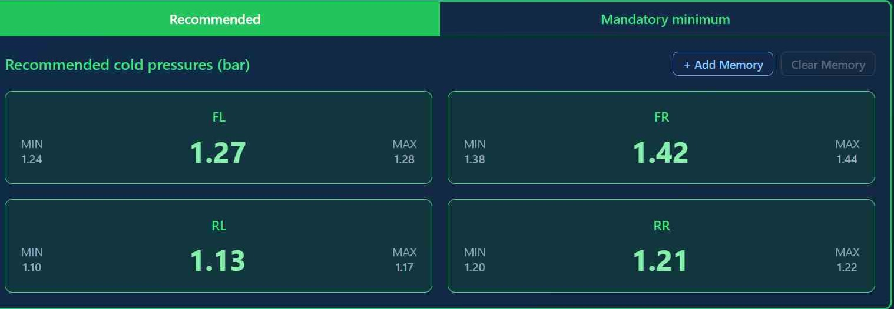
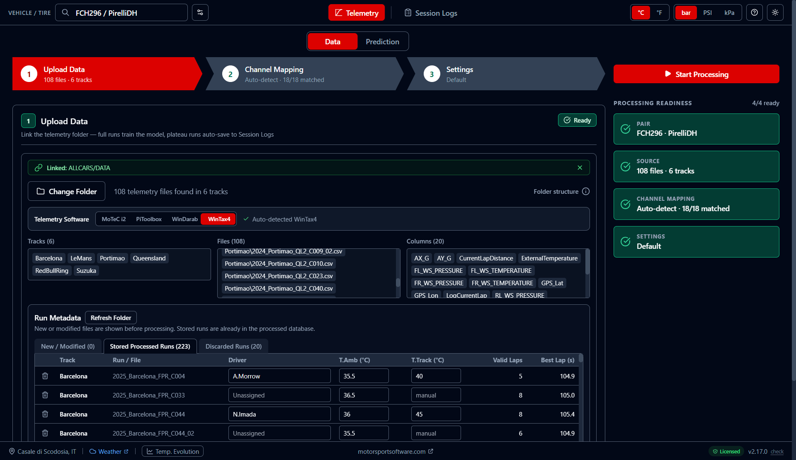
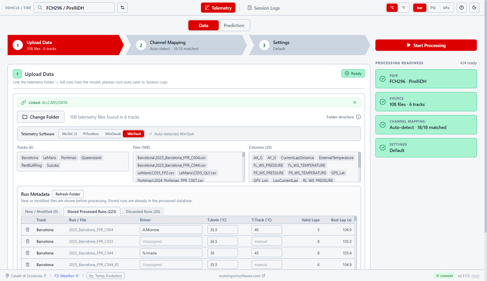
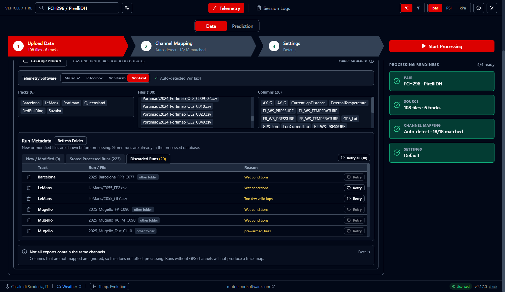
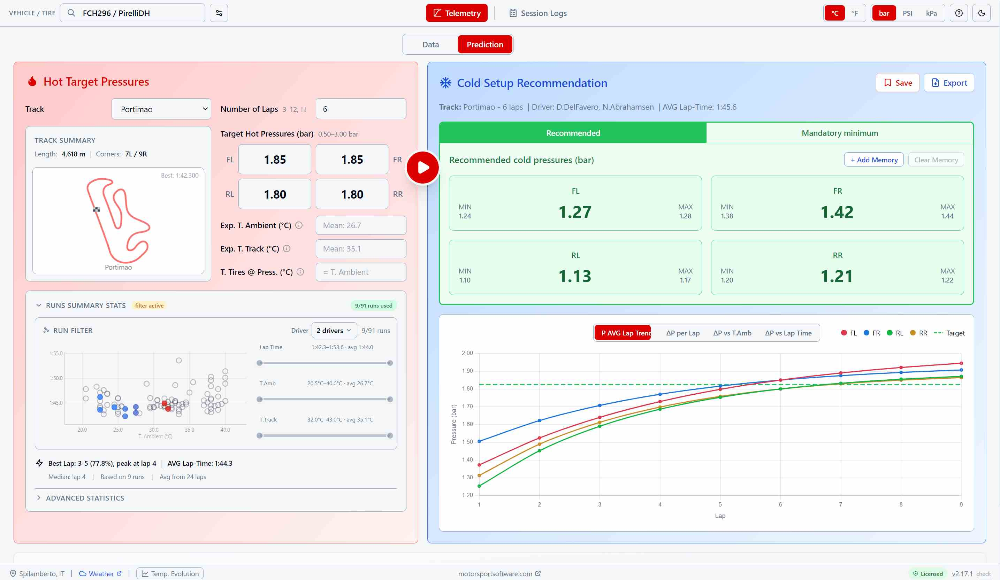
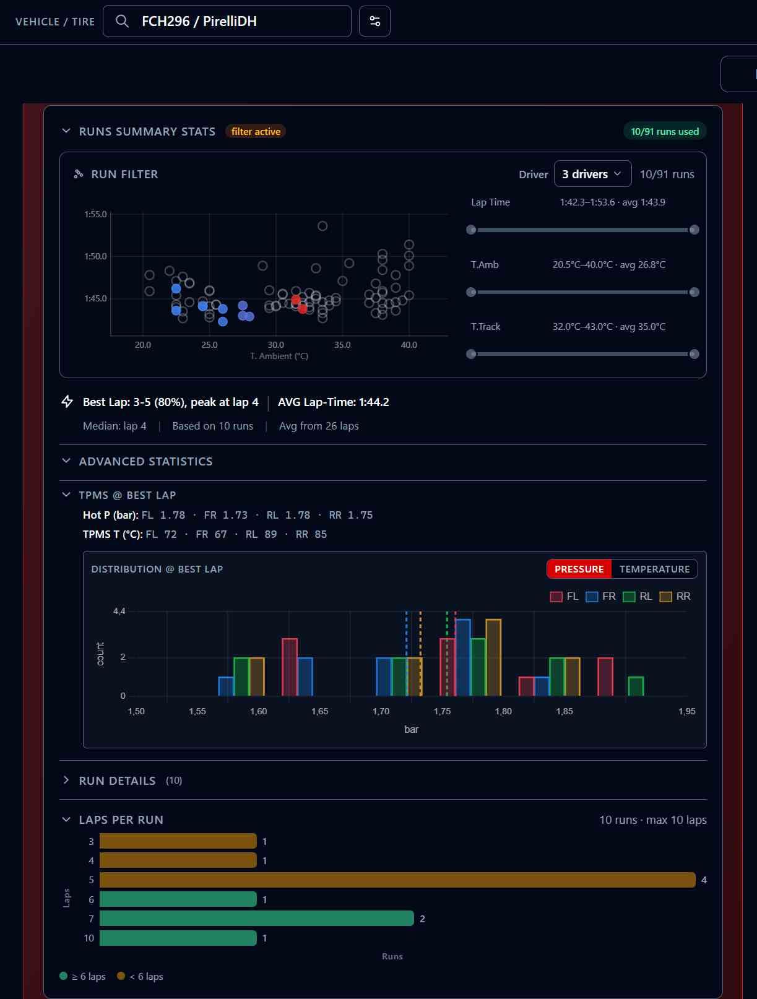
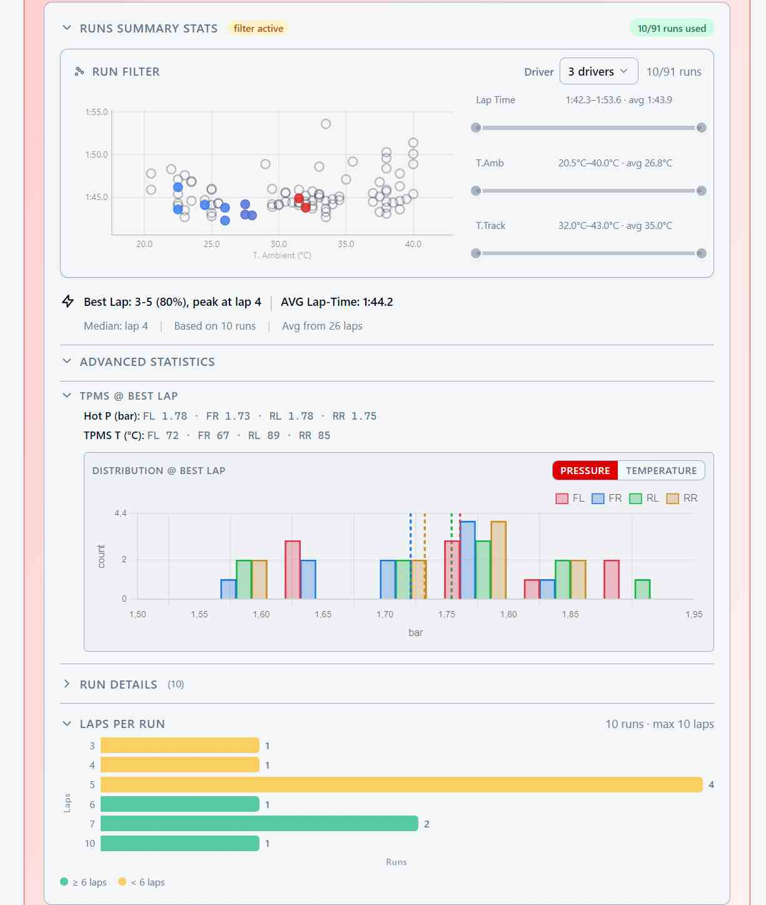
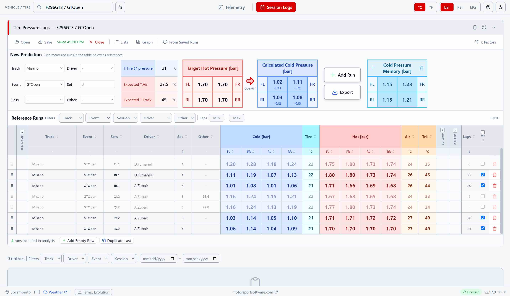

Three things in. Four numbers out.
-
1
Point it at your telemetry Link the folder your logger exports to. Every session you have already run becomes training data.
-
2
Say where you are racing The track, how many laps, and the hot pressures you want to be running on.
-
3
Set the cold pressures One value per corner, ready for the garage — with the range to expect around it.

Two ways in, depending on what your car gives you.
Features
Telemetry
The same three steps you walk through in the app. Click one to see it.


Link the folder, not the files
Point the app at the folder your logger already exports to. It scans it, works out which software produced the files, and remembers the path.
WinTax4, WinDarab, MoTeC or PiToolbox, identified from the content of the files themselves. Reads .csv, .txt, .xls and .xlsx.
Refresh Folder picks up whatever was added since last time. Nothing to zip, nothing to copy by hand.
Each vehicle/tyre pair keeps its own data. Export it as a single .tpp file and it moves to another PC complete with settings, mappings and logs.


Your channel names, understood
Every team names its channels differently. The app matches yours to what it needs and shows you exactly what it found — before you waste a session on a missing one.
Eighteen out of eighteen on a standard export, each with the unit it is read in. Anything missing is flagged in red.
Switch to Custom to pick a channel yourself, or to declare a different unit — psi instead of bar, °F instead of °C.
The mapping is stored with the pair and applied at every processing, so you set it up once per car.


Nothing is discarded silently
A four-point checklist tells you what is still missing before you start. Then every run is either stored or set aside with the reason written next to it — and a run set aside is never lost.
New, stored and discarded, each on its own tab. Set the driver and the ambient temperature per run and it is reprocessed from the original telemetry.
Wet, pre-warmed, too few valid laps — the reason is there. Change the threshold and retry it, or delete it for good, telemetry file included.
Wet sessions, out-laps, pit bleeds and sensor spikes are filtered out before training, so the model only ever learns from representative laps.
Cold Pressure Prediction
Keep the runs that look like the session ahead, and read the four numbers. The corrections, the range and the build-up curve all come from your own data.
Filter by driver, ambient temperature and lap time. What you keep is what feeds the prediction — match race-day conditions instead of averaging a whole season.
Colder or hotter than when you trained? The prediction is adjusted for air, for track surface, and for tyres inflated in a warm garage.
Every corner carries the minimum and maximum to expect, so you can see when the data behind it is thin. In bar, PSI or kPa.
Watch the pressures climb towards your target across the stint, and see where they settle — per corner, against the target line.




Know What Your Data Is Worth
Before you trust a number, look at what produced it. The statistics panel opens up the runs sitting behind the prediction — and tells you when there are not enough of them.
Pressure and temperature per corner at the fastest lap of your selection: the reference every setup ends up being judged against.
Where each wheel actually sat across the selected runs, by pressure or by temperature. A wide spread on one corner is telling you something.
Green when a run is long enough for the stint you asked for, amber when it is not — so you never extrapolate without knowing that you are.
Session Logs & Tire Pressure Logs
For cars without TPMS, or whenever you measure at the car by hand. Type the cold and hot pressures you read, get the recommendation from the same gas-law maths.
Cold, hot, tyre, air and track temperature per run, with driver, event and session. Filter it, reorder it, export it for the tyre engineer.
Enter the hot pressures you are targeting and the conditions you expect, read the cold values — each with the change from the set you ran last.
Runs whose pressures stabilised in the telemetry land here on their own, as verified references you did not have to measure.


FAQ
How do I get started?
What data do I need?
How does the Run Filter work?
How do temperature corrections work?
How does the bleed correction work?
Does it work for long runs vs qualifying?
What is Plateau Detection?
Can I use it without TPMS?
What is Tire Pressure Logs?
More questions? Email us
Download the App
Fill in the form and start using Tire Pressure Predictor
Or email directly: support@motorsportsoftware.com
Looking for more motorsport tools? Visit motorsportsoftware.com